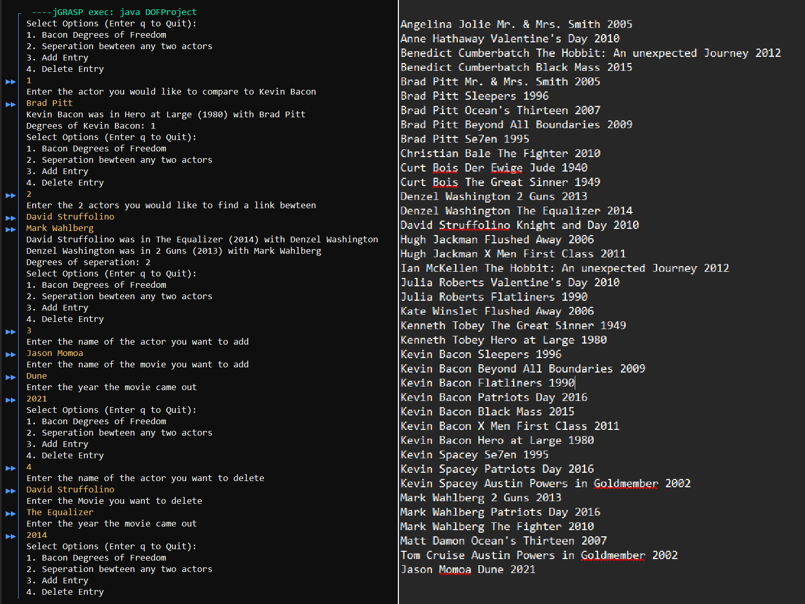

This Website
The first project is this very website. It serves not only as a landing page but also taught me basic HTML and CSS. I enjoyed creating this website because it activated the graphic designer part of my brain by allowing me to experiment with colors. I also learned how to set up and modify basic HTML sites using CSS.
Unit Conversion
The second project I would like to display is my unit conversion GUI. I created this GUI to learn how to build graphical user interfaces. It is a simple program that allows users to input units and convert them. I enjoyed how it outputs results to a GUI instead of the terminal. This project taught me about creating basic UIs in Java and introduced me to several UI elements such as comboboxes, frames, and text fields. Additionally, I refactored the code using a hashmap, which made it extremely clean

A Degrees of Kevin Bacon Seperator
I developed a Degrees of Separation for Kevin Bacon program. My main approach for the logic was to imagine a discrete math graph, with nodes representing actors and edges representing movies connecting them. Currently, it only goes up to two degrees, but I plan to refactor it to handle more than two degrees. However this project did teach me how to apply error throwing and handling to my program as well as helping me apply discrete math to programming
